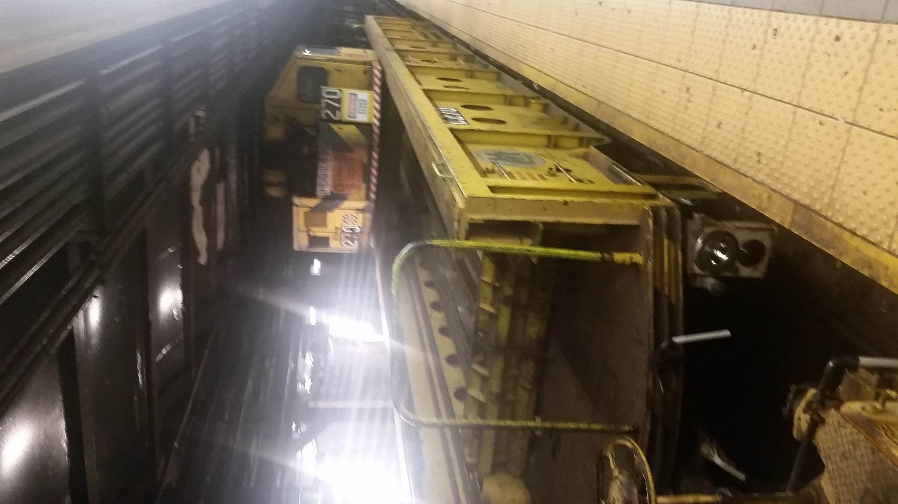
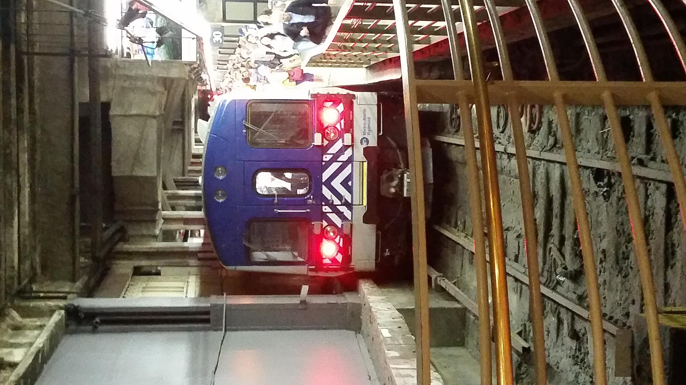
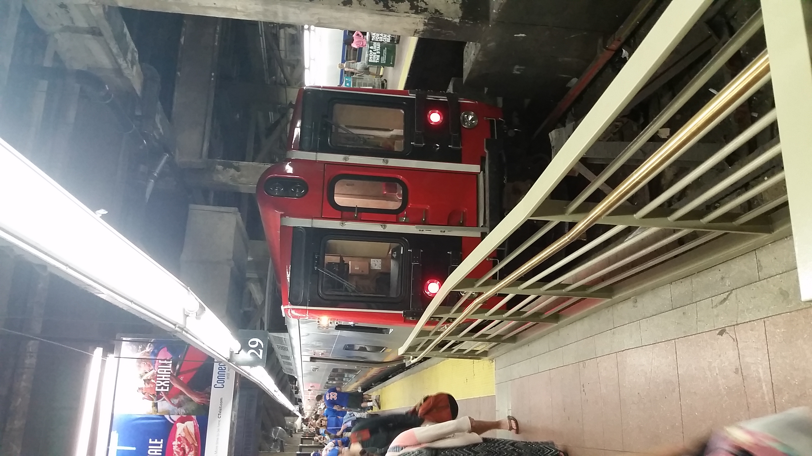
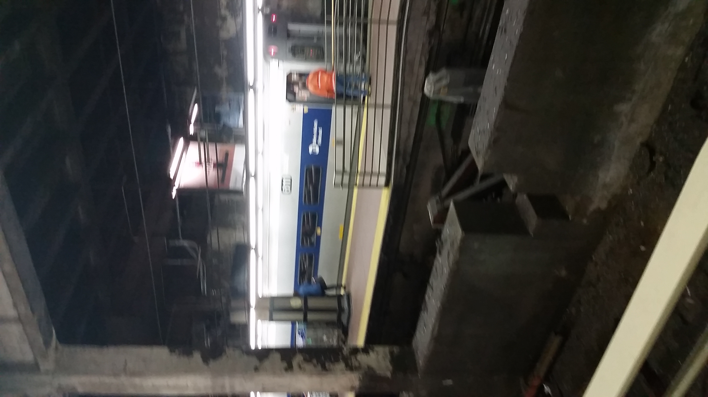
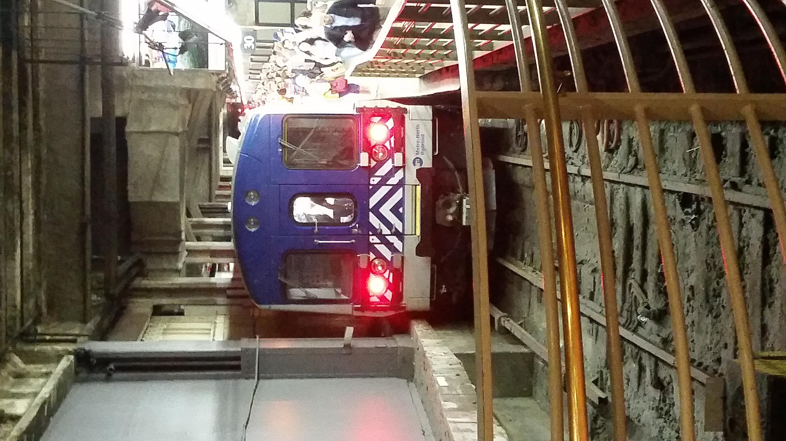
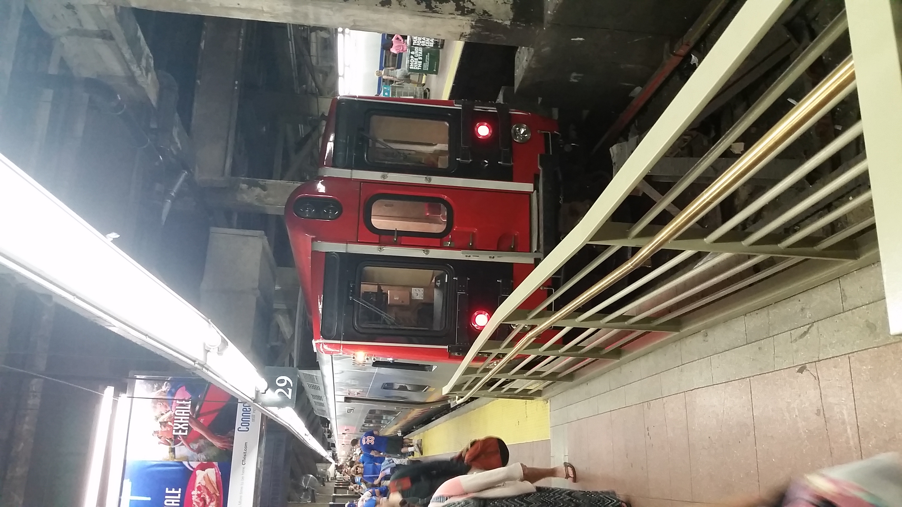
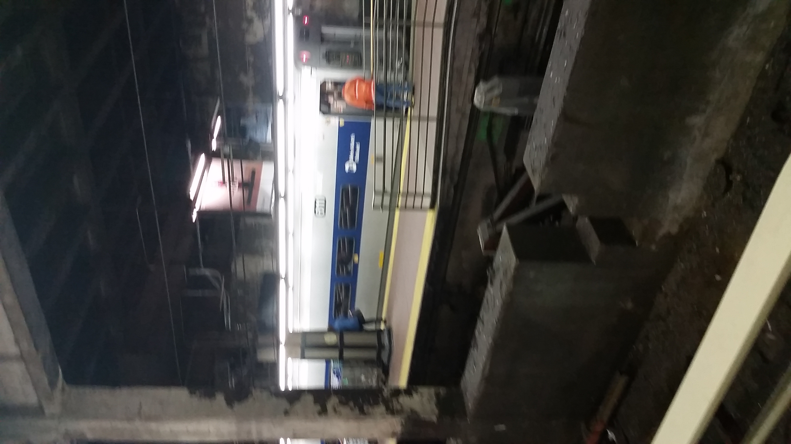

Welcome!
Click each tab to learn more about the website!
About
Mission Statement:
Our mission is to help the people of New York City truly appreciate a piece of its landscape that most of us take for granted. We also are going to educate the people about what makes our city unique as a whole.
We aim to make the commute of every transit passenger as fast as possible and to make it overall better than before!!!
Some Activities:
- Participate in discussions about the system
- Make theories about the system
- Discuss abandoned stations like 76th Street Station!
- Get tickets and updates to fun events like the Nostalgia Trains and the New York City Transit Museum
- We might host workshops for making paper buses!
- Talk about other transit systems, such as PATH, WMATA, and the Chicago L
- We can even discuss topics such as aviation or any other mode of transit you have in mind!!!
Gallery
Subway/Rail



.jpg)
.jpg) 





Buses


Staff
- Greg Huang: Founder and President
- Shivasuryan Vummidi: Founder, Vice President, and Head Site Programmer
- Other GitHub collaborators: Site Programmers
- Michael Xu: Current Treasurer
- Christopher Galano: Faculty Adviser
Former Staff:
- Dimitri Fedorov: Founder and Former Treasurer
Rules
By using this website: you hereby agree to the following terms and rules:
PRIVACY POLICY: This website is not intended to collect information from any visitor, except for who exactly is browsing it. Google Analytics collects data on who is browsing.
Definitions:
- Orderly: Using this website for no malicious intent
- "You": You, the user viewing this page and website
- Problem: Anything that goes wrong in the website, such as malicious content, users, errors, or bug fixes.
- Slander: False rumors or content targeted towards a person, a certain group of people, or to the club.
- Staff: Members of the club with a certain position such as President, Vice President, Treasurer, and GitHub collaborators maintaining the website.
- Website: Includes this entire website and associated webpages, as well as the Facebook Group.
Terms and Conditions
- This website is intended to be used in an orderly manner in order to create and maintain a successful community. Here are the rules:
- Under absolutely no circumstances is slander allowed. If a person is found creating slander, he/she will be barred from the club until further notice and the incident will be reported to Mr. Moran and the Student Union.
- Malicious content is strictly prohibited. If anybody is found creating and spreading malicious content, then he/she will be barred from the club until further notice and will be suspended from the club. The incident will be reported to Mr. Moran and the Student Union.
- Infringement of the privacy of the staff or the student members will automatically result in that person being barred from the club and their suspension from the club.
- You, by using this website, agree to all the terms and conditions of this page, which applies to every part of the website. Failure to read this page does not constitute an excuse for violating any of the rules mentioned by the Student Union, this website, and Stuyvesant High School.
- Stuyvesant Transit Association is under the jurisdiction of the Stuyvesant Student Union, so all of its rules will apply here as well.
- Any specific person who fails to uphold Student Union rules will be suspended from the club.
- Failure to uphold its rules and honor code can or will result in the suspension of Stuyvesant Transit Association.
- You can view the rules HERE
- If there is a problem in the website, fill out the form below and submit it! I will find the problem and fix it!
STAFF ONLY SECTION:
Impeachment:
- If a staff member does not abide to his or her position, he/she may be impeached.
- If a staff member does not abide to the rules above, then he gets a strike if a complaint is filed by either a member of the club or by the Student Union. If a staff member progressively fails to do his/her job or gets three strikes, then he can be subject to impeachment. If he/she is found guilty, then the person will be removed from his position and an election will take place for his/her replacement.